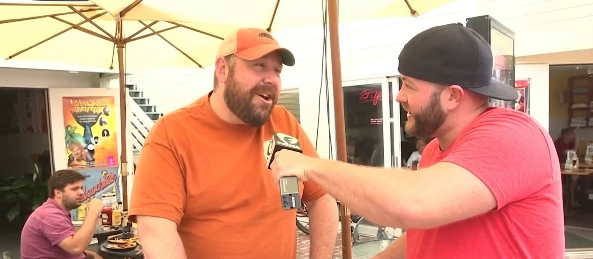
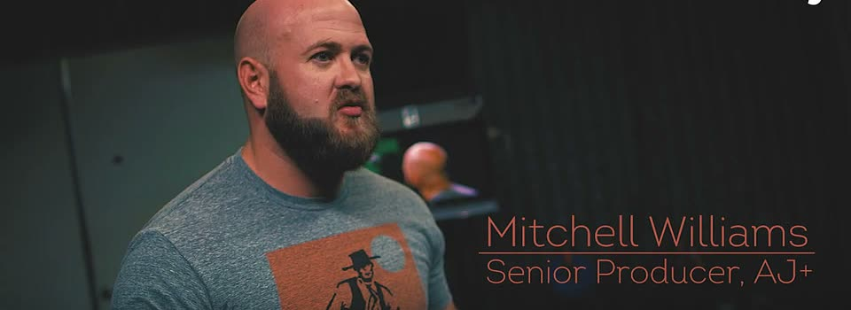

The bridge
I bridge two things that rarely share a resume: production AI systems and live-broadcast journalism. A decade at the properties that rewired live television. Then Google, where I ran communications for 1,000+ Principal, Distinguished, and Fellow engineers, and stopped writing about the systems and started building them.
Now I build AI-native storytelling and enablement systems full time. Whether the system is a live control room or an LLM orchestration layer, the discipline is the same: identify what matters, build the structure that gets it out, measure what happened.
The full trajectory is on the Timeline, and the stories behind the biggest nights are on Stories.
Eighteen years, two control rooms
As a founding-team Associate Producer on Al Jazeera English's The Stream, I helped launch to 250 million households on the night Osama bin Laden was killed: the planned rundown abandoned overnight, Sohaib Athar (@ReallyVirtual) booked live on Skype while his follower count graphed from a few hundred to tens of thousands on air.
At HuffPost Live, I produced the PrEP/Truvada panel six months after FDA approval, with the IPREX clinical trial chair live from Lima; the host thanked me by name on air for originating the story. At Fusion, as Senior Producer on America With Jorge Ramos, I produced the 44-minute live primetime special on Mandela's death, a three-way ABC/Univision/Fusion integration on a rebuilt rundown.

At AJ+, I field-produced San Juan Mayor Carmen Yulin Cruz during active Hurricane Maria conditions, and I ran a team during the era AJ+ reached 500 million weekly viewers, with one piece of my own hitting 50 million. I led 10+ producers there and coached three of them into on-camera principals; two carry Emmy and Webby wins of their own.

"Thank you to our wonderful producer, Mitchell Williams, who brought this to our attention." · host, HuffPost Live PrEP/Truvada panel, [29:00]
Then Google: six years as Senior Communications & Content Strategist in Corporate Engineering, where video-first internal comms reached 75,000+ employees, and earlier I wrote executive communications for Google's then-CIO.
From there, the Office of Cross Google Engineering (xGE), as Internal Communications Lead for the community of 1,000+ senior engineers at the Principal, Distinguished, and Fellow levels: I owned communications for the annual Sr. Tech IC Summit (600+ attendees) and quarterly forums (300+ each), authored the org's three-tier communications operating model, ran the recurring approval-intake prioritization meetings, and wrote directly for a VP.
I built and deployed two production AI agents solo: a communications-triage agent, documented end to end and handed off with a full operator runbook, and an executive "digital twin" writing system that cut review back-and-forth with the VP by about 70%, an internal figure I measured myself.
The communications-first view of this career lives on the comms page, with the craft demonstrations in the writing room.